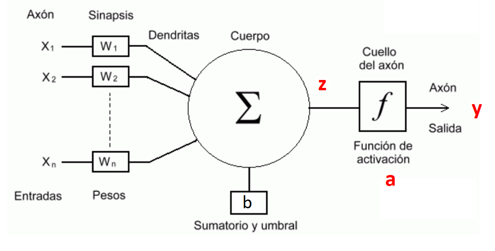

Red densa simple#
Neurona de McCulloch y Pitts#
[McCulloch and Pitts, 1943] propusieron el primer modelo de neurona artificial denominado TLU (Threshold Logic Unit) o LTU (Linear Threshold Unit), unidad de umbral lineal. A esta neurona artificial también se le denomina Perceptrón.
El modelo parte de \(n\) entradas \((x_1, x_2, ..., x_j, ..., x_n)\) a la que se aplica una ponderación lineal más un umbral (que suele denominarse sesgo o bias, \(b\)):
A la que se aplica una función de activación no lineal, que en el modelo de McCulloch y Pitts es una función escalonada del tipo
Resultando un modelo con salida digital o binaria. Las entradas \((x_1, x_2, ..., x_j, ..., x_n)\) equivalen a las dendritas, el parámetro \(b\) se denomina umbral o bias y la salida \(a\) es el axón. Durante el entrenamiento se compara \(a\) con los valores reales que se encuentran en \(y\)
{kind=link}
El perceptrón simple#
[Rosenblatt, 1958] introdujo el perceptrón simple formado por dos capas, una de entrada con n neuronas y una de salida con m neuronas. [Widrow and Hoff, 1960] introdujeron el modelo ADAptative LInear Neuron (Adaline) tambien bicapa.
Activación de una observación \(\bar{x}\) por efecto de la red#
Dada 1 observación \(\bar{x}=(x_1,...,x_j, ..., x_n)\) de la que se conoce su clase en formato one-hote \(\bar{y}=(y_1,...,y_i, ...y_m)\)
Primero se efectua una ponderación lineal \(\bar{z}=(z_1,...,z_i, ..., z_m)\) de la que se obtiene la salida \(\bar{a}\) aplicando una función de activación:
Se puede decir que existen \(n\) neuronas de entrada y \(m\) neuronas de salida. La ponderación lineal en las neuronas de salida a partir de los pesos se calcula:
Hacen falta \(n \times m\) pesos y \(m\) bias para definir la red, que puesto en forma matricial:
Siendo

Entrenamiento que produce en la red una observación \(\bar{x}\)#
Se supone el siguiente ejemplo sencillo de red bicapa
{kind=link}
La red se puede configurar con las matrices de pesos y bias siguientes:
Se conoce una observación \(\bar{x}=(x_1, x_2, x_3)\) de la que se sabe su clase en formato one-hot \(\bar{y}=(y_1, y_2)\). Una vez activada la red se obtiene \(\bar{a}=(a_1, a_2)\). Usando el error al cuadrado, la pérdida de esta observación será:
Se sabe que:
La tasa de variación de la función de pérdida con respecto al peso \(w_{11}\) afecta a la primera neurona de salida, por lo tanto se calcula aplicando la regla de la cadena así:
Por tanto
Llamando \(\delta_1 = (a_1 - y_1) f'(z_1)\) las tasas de variación respecto a la configuración que aplica sobre \(z_1\) es:
Repitiendo el proceso con respecto al peso \(w_{21}\) afecta a la segunda neurona de salida (término \(a_2\)):
Llamando \(\delta_2 = (a_2 - y_2) f'(z_2)\) las tasas de variación respecto a la configuración que aplica sobre \(z_2\) es:
El gradiente que optimiza la configuración de la red por el impacto de la observación \(\bar{x}\) será:
Y también
Además \(\bar{\delta}\) se puede poner vectorialmente:
De la que se obtiene la expresión final:
Donde \(\bar{a} - \bar{y}\) es el error neto y \(\odot\) es el producto de hadamard que obtiene a partir de 2 vectores un nuevo vector donde sus compenentes son el producto componente a componente.
Indicar como comentario final que además los gradientes \( \frac{\partial{C}}{\partial{W}}\) y \( \frac{\partial{C}}{\partial{B}}\) que optimizan la configuración de la red, se tiene que \(\bar{\delta}\) es un gradiente intermedio de \(C\) con respecto a \(\bar{z}\). Efectivamente:
Resumen del modelo#
Resumen del entrenamiento de 1 observación
Gradientes asociados
Comentarios Finales#
Una de las funciones de activación primeras que se usaron fuero la sigmoidea o lógistica
El gradiente descenso se basa en que el vector gradiente define en el dominio de una función de varias variables \(f(\bar{x})\) la dirección de máximo incremento de la pendiente. De forma que se toma signo negativo para ir hacia un mínimo local y un valor de magnitud reducida \(\eta\) que evite saltar el mínimo por un avance excesivo.
Así partiendo de un valor aleatorio \(\bar{x} = \bar{x}_0\) se busca el mínimo local a través de sucesivas iteraciones: